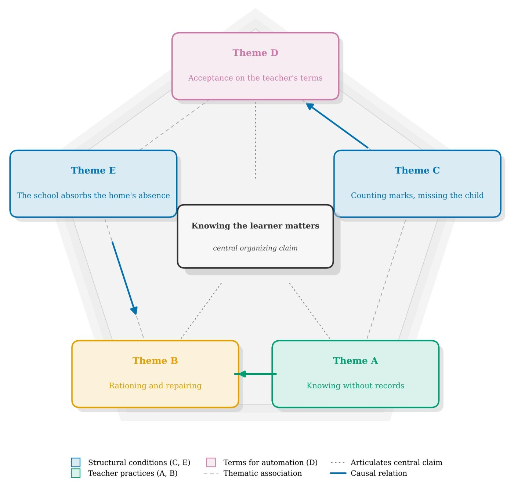

Automated formative assessment in school education
How can automated and data-driven assessment strengthen teachers' formative practice without losing sight of the learner? The study designs and evaluates automated formative assessment that draws on multidimensional learner data.
